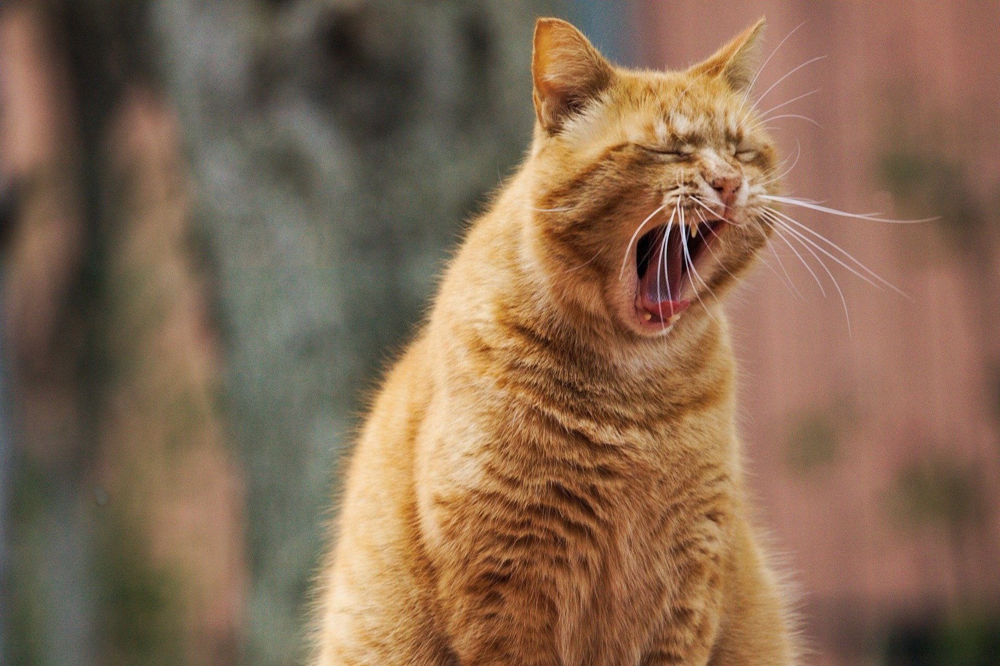
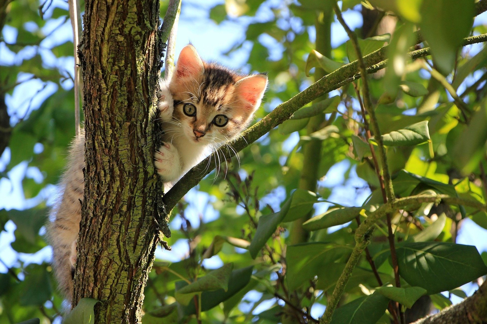

Cirmi
Cirmi egy igazi szerethető vörös kandúr. Gyakran képzeli magáról, hogy egy tigris, ahogy azt a képen is megfigyelhetjük.
Dezső

Dezső egy roppant eszes, okos macska. Egy pszichológus cicája volt, szeret ülni és problémákat hallgatni.
Gazsi
Gazsit egy fa tetején találták meg 2 hete. Kedvenc elfoglaltsága a fára mászás, nagyon nehezen lehet lekönyörögni esténként.
Irénke
Irénkét az utcán találták, nagyon szereti a növényeket. Jelenleg csupán 4 hetes, de már bőszen gyomtalanítja a járdát.
Juan
Juan Irénke testvére, ugyancsak növénybarát, bár gyakran fogyasztja kedvenc virágait egerek helyett, ugyanis Juan vegán.
Dracula
Draculáról gyakran rebesgetik, hogy vámpír macska volt az apja. Szerintünk ez nem valós, de csak ilyen képet tudtunk lőni róla.